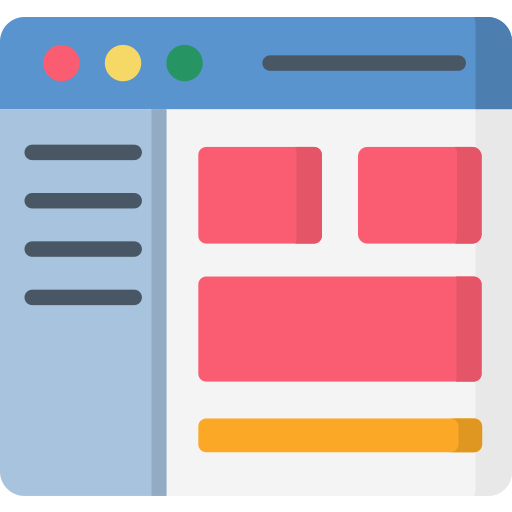

Consulting-proven
Though being pretty much at the beginning of my career, I have gained experience in a multitude of management consulting firms.
Analytics-driven
Having a hands-on mentality, I enjoy building all kinds of stuff - ranging from machine learning models or BI dashboards over to sand castles.
Party on!

While being a hard worker at daytime, I'm always down for drinks with friends after work - especially when football is involved. Go Schalke 04!